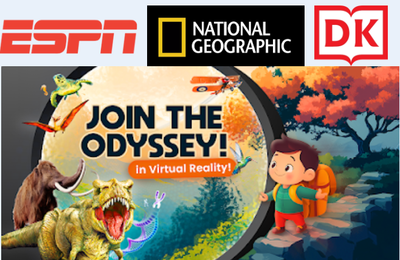
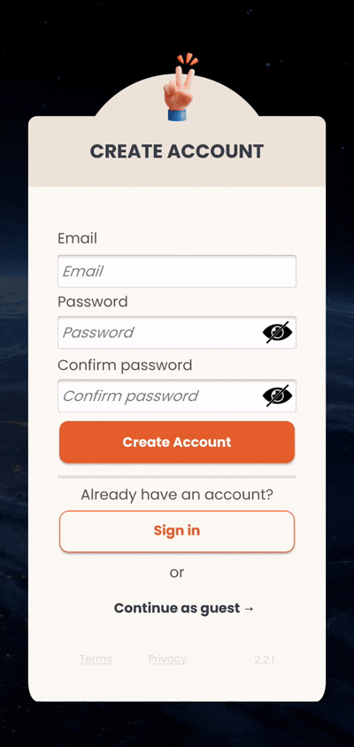
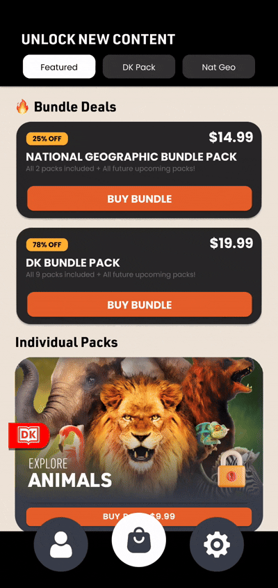
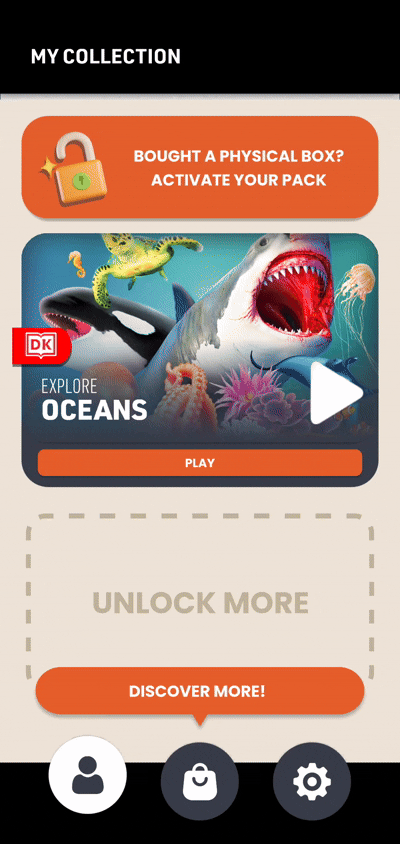
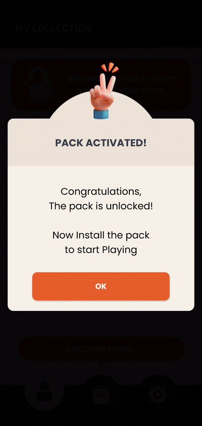
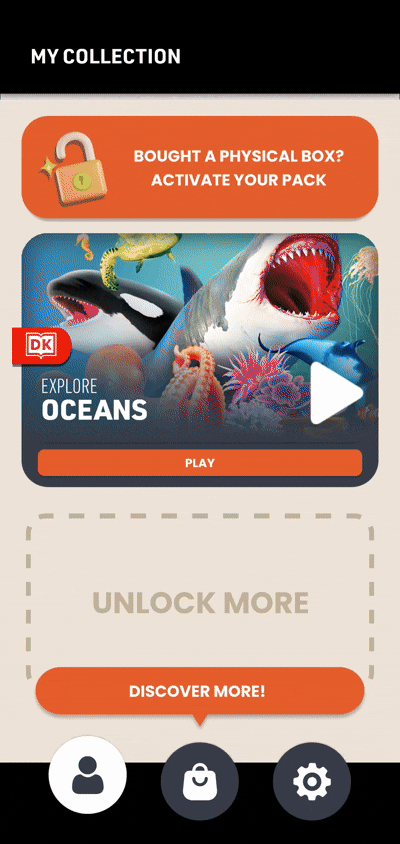
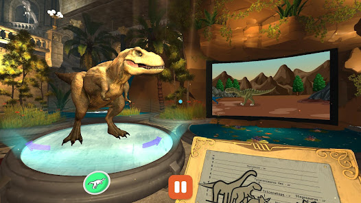
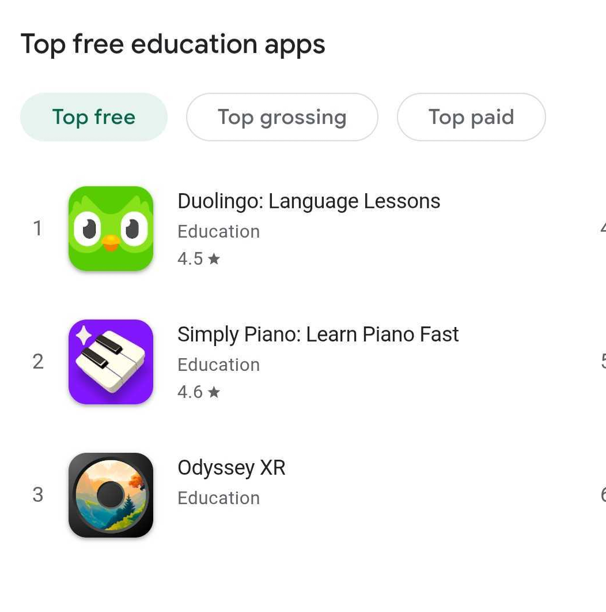

 Discover the thrill and excitement of sports in immersive virtual reality! Go behind the scenes at ESPN and learn your favorite sports like never before. This deluxe gift set includes an interactive 128-page DK book, 20+ VR experiences, and a set of championship medals!
iOS, Android
C#
Unity, Firebase, Addressables, ARFoundation
Dec 2024 - March 2026
Discover the thrill and excitement of sports in immersive virtual reality! Go behind the scenes at ESPN and learn your favorite sports like never before. This deluxe gift set includes an interactive 128-page DK book, 20+ VR experiences, and a set of championship medals!
iOS, Android
C#
Unity, Firebase, Addressables, ARFoundation
Dec 2024 - March 2026

I also setup in-app purchases - for bundles and individual packs. Testing to make sure it works on both iOS and Android and that it will display the correct localized price. When user presses the buy button, the native in app purchase UI will appear.
Then I set up tabs so users can go between All Packs, DK Packs, and National Geographic Packs. The pack is in a vertial layout group and it can be scrolled. Depending on the tab selected, I enable or disable the pack. Each pack can also be expanded to show a description of what the pack is before the user purchases. I used Dotween the control the scale and anchor of each gameobject. Here's an example of how I use Dotween to control where the buttons anchor and scale goes when the pack is expanded. Notice depending on the state of the pack, it is either in play or lock mode.
Here's an example of how I use Dotween to control where the buttons anchor and scale goes when the pack is expanded. Notice depending on the state of the pack, it is either in play or lock mode.

The user can then download the content. I use addressables so that the initial app download is small and user can download the content they choose. We display the size of how much they are downloading so user can decide if they have space or not on their device.
When the user purchases and owns the pack, they can select the pack to open in AR "scanning" mode or in Virtual mode if they don't have the book with them. They can also decide to choose goggle mode or handheld mode.
After selecting an experience you will be brought to an experience either 360 video, 2D video, or an interactive scene.
All these systems implemented together helped our app reach number 3 in Top Free Education on Boxing Day! Next to Duolingo and Simply Piano.